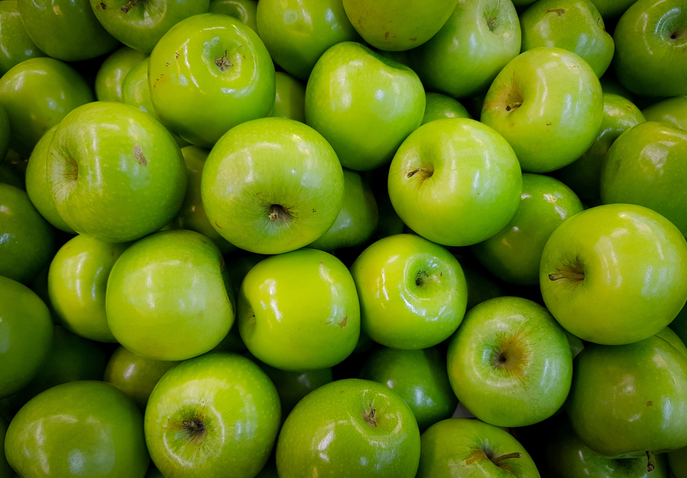

Cultivo Sustentável das Nossas Maçãs Verdes
Nossas árvores de maçãs são tratadas com o maior respeito, seguindo práticas sustentáveis e ecológicas. Optamos por métodos de cultivo orgânicos que eliminam o uso de pesticidas químicos e priorizam o equilíbrio natural do ecossistema. Isso não apenas produz maçãs mais saudáveis, mas também preserva a biodiversidade em nossos pomares.
Cuidamos de nossas árvores durante todo o ano, monitorando o crescimento, a saúde e a qualidade dos frutos. Quando chega a hora da colheita, nossas maçãs são escolhidas à mão com grande atenção para garantir que estejam no auge de sua maturação, resultando em maçãs verdes incrivelmente frescas e saborosas.
Além disso, somos conscientes do uso da água, empregando métodos de irrigação eficientes para minimizar o consumo e preservar esse recurso essencial. Nossas práticas sustentáveis não apenas criam maçãs verdes de alta qualidade, mas também contribuem para a saúde do nosso planeta.
Estamos orgulhosos de compartilhar o resultado de nosso cuidado dedicado e compromisso com a qualidade em cada maçã verde que produzimos. Nossos pomares são uma extensão de nossa paixão pela natureza e nosso desejo de oferecer a você o melhor que ela tem a oferecer.
Beneficios de Nossas Maças
- Elas apoiam a agricultura familiar
- Não se usa agrotóxicos
- Ricas em fibras
- Deliciosas
- Refrescantes